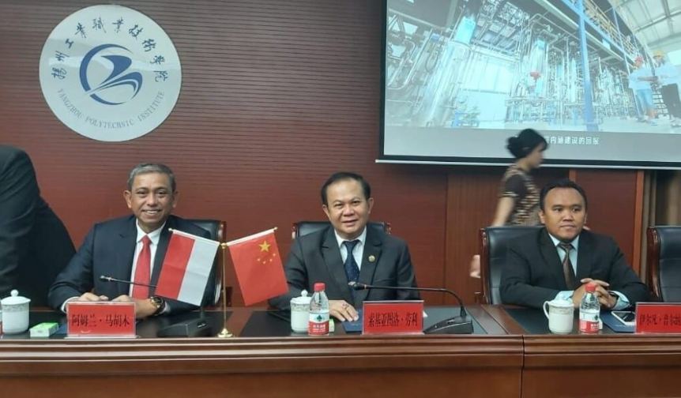
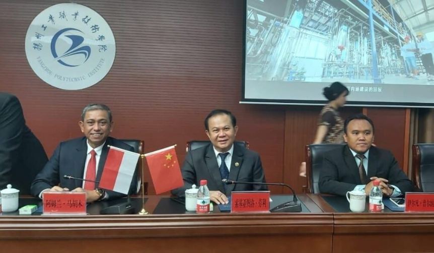
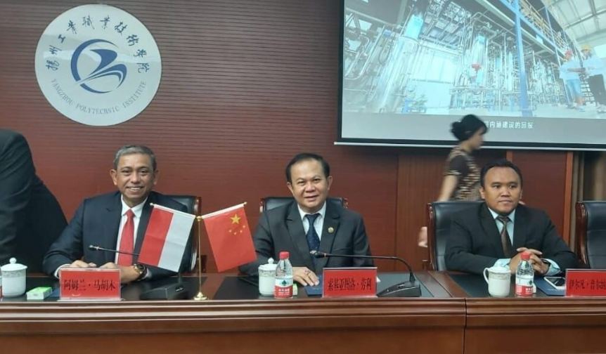

Galeri

 


Kerja sama bilateral merupakan kolaborasi antara dua negara dalam bidang tertentu. Dalam konteks pendidikan, kerja sama bilateral Indonesia-China dapat mencakup berbagai program yang melibatkan kedua negara untuk meningkatkan kualitas pendidikan dan pengembangan sumber daya manusia. pendidikan berkualitas meliputi:
a. Program Beasiswa : China telah menawarkan berbagai beasiswa kepada mahasiswa Indonesia untuk melanjutkan studi di universitas-universitas terkemuka di China, khususnya dalam bidang teknologi, sains, dan budaya. Beasiswa ini memungkinkan pengembangan kapasitas intelektual di kalangan mahasiswa Indonesia dan mempererat hubungan antarwarga.
b. Pertukaran Pelajar dan Program Kolaborasi Akademik : Banyak universitas di Indonesia yang menjalin kemitraan dengan universitas di China untuk mengembangkan kurikulum bersama, riset bersama, serta program pertukaran pelajar. Ini memberi kesempatan kepada mahasiswa untuk mengakses pendidikan yang berkualitas dan memperluas wawasan internasional mereka.
c. Pendidikan Kejuruan dan Pengembangan Keterampilan : Kerja sama dalam program pelatihan vokasi dan pendidikan kejuruan sangat penting untuk meningkatkan keterampilan tenaga kerja Indonesia, seiring dengan kebutuhan industri yang semakin berkembang. China, dengan pengalamannya dalam sektor manufaktur dan teknologi, bisa menjadi mitra dalam mengembangkan pendidikan kejuruan yang relevan.